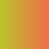

8.6
12 Gradient
| (require simple-svg) | package: simple-svg |
procedure
(svg-def-gradient-stop #:offset offset #:color color [ #:opacity? opacity?]) → (list/c (integer-in 0 100) string? (between/c 0 1)) offset : (integer-in 0 100) color : string? opacity? : (between/c 0 1) = 1
offset from 0 to 100, means the distance of the color gradient.
lineargradient and radialgradient both have a stop list.
procedure
(svg-def-linear-gradient stop_list [ #:x1? x1? #:y1? y1? #:x2? x2? #:y2? y2? #:gradientUnits? gradientUnits? #:spreadMethod? spreadMethod?]) → string? stop_list : (listof (list/c (integer-in 0 100) string? (between/c 0 1))) x1? : (or/c #f natural?) = #f y1? : (or/c #f natural?) = #f x2? : (or/c #f natural?) = #f y2? : (or/c #f natural?) = #f
gradientUnits? : (or/c #f 'userSpaceOnUse 'objectBoundingBox) = #f spreadMethod? : (or/c #f 'pad 'repeat 'reflect) = #f
use x1, y1, x2, y2 justify gradient’s direction and position.
default is from left to right, x1=0, y1=0, x2=100, y2=0.
(let ([rec (svg-def-rect 100 100)] [gradient (svg-def-linear-gradient (list (svg-def-gradient-stop #:offset 0 #:color "#BBC42A") (svg-def-gradient-stop #:offset 100 #:color "#ED6E46") ))] [_sstyle (sstyle-new)]) (sstyle-set! _sstyle 'fill-gradient gradient) (svg-use-shape rec _sstyle) (svg-show-default))

procedure
(svg-def-radial-gradient stop_list [ #:cx? cx? #:cy? cy? #:fx? fx? #:fy? fy? #:r? r? #:gradientUnits? gradientUnits? #:spreadMethod? spreadMethod?]) → string? stop_list : (listof (list/c (integer-in 0 100) string? (between/c 0 1))) cx? : (or/c #f natural?) = #f cy? : (or/c #f natural?) = #f fx? : (or/f #f natural?) = #f fy? : (or/f #f natural?) = #f r? : (or/c #f natural?) = #f
gradientUnits? : (or/c #f 'userSpaceOnUse 'objectBoundingBox) = #f spreadMethod? : (or/c #f 'pad 'repeat 'reflect) = #f
cx, cy, fx, fy has value 0 - 100, means 0% - 100%, use them to justify gradient’s position and direction.
(let ([rec (svg-def-rect 100 100)] [gradient (svg-def-radial-gradient (list (svg-def-gradient-stop #:offset 0 #:color "#BBC42A") (svg-def-gradient-stop #:offset 100 #:color "#ED6E46") ))] [_sstyle (sstyle-new)]) (sstyle-set! _sstyle 'fill-gradient gradient) (svg-use-shape rec _sstyle) (svg-show-default))